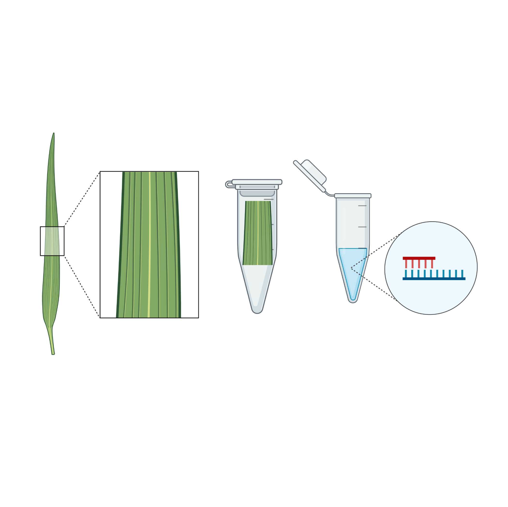
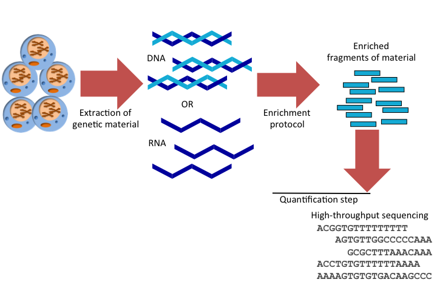
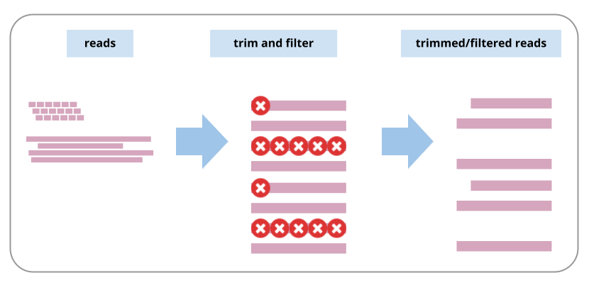
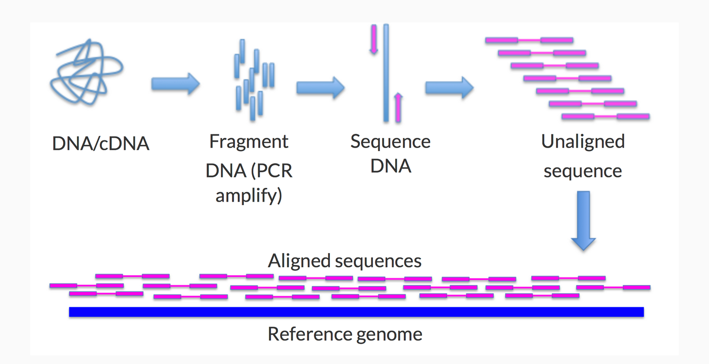
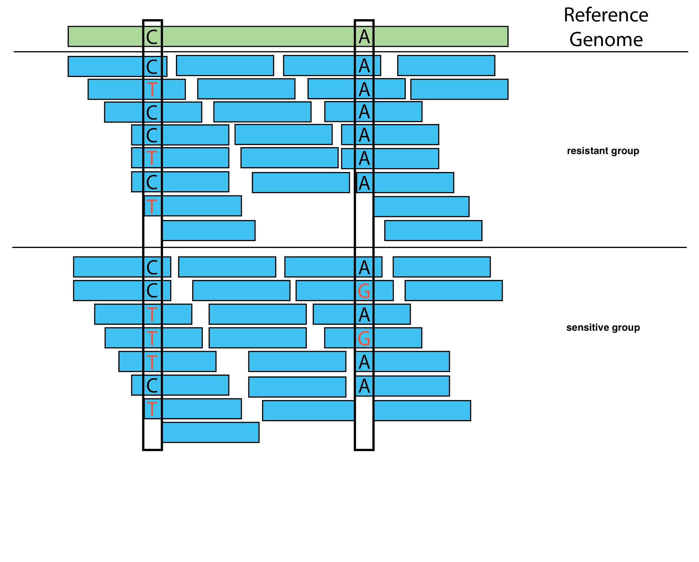

7 A typical bioinformatics workflow
Scenario: Improving Drought Resistance in Wheat
Background
You are a plant geneticist working at an agricultural research institute. Your team is focused on improving drought resistance in wheat, a staple crop increasingly affected by climate change. You aim to identify genetic variations that confer drought resistance to develop new, resilient wheat varieties.
Step 1: Sample Collection
You collect leaf samples from two sets of wheat plants: those that have shown high drought resistance (resistant group) and those that are sensitive to drought (sensitive group).

Step 2: DNA Extraction and Sequencing
In the lab, your team extracts DNA from the leaf samples. You then use a high-throughput sequencing platform (such as Illumina HiSeq) to sequence the genomes of both the resistant and sensitive wheat plants. This generates millions of short DNA reads.

Step 3: Quality Control
The raw sequencing data undergoes quality control checks to ensure high accuracy. Low-quality reads and adapter sequences are filtered out.

Step 4: Alignment to the Reference Genome
You use Bowtie2 to align the sequencing reads to the wheat reference genome (IWGSC RefSeq v1.0). This reference genome provides a standard framework for comparison.

Bowtie2 maps each read to its most likely location on the wheat reference genome. This step helps in determining where each short sequence comes from within the genome.
Step 5: Variant Calling
After alignment, you use variant calling software (such as GATK) to identify genetic differences between the resistant and sensitive groups compared to the reference genome. These differences include SNPs, insertions, and deletions.

Step 6: Filtering and Annotation
Genome annotation is the process of identifying and marking the locations of genes and other functional elements within a genome sequence. It involves both structural and functional annotation.
The identified variants are filtered to focus on those that are unique to the drought-resistant plants and potentially beneficial. You annotate these variants using databases like Ensembl Plants to predict their functional impact.
Step 7: Data Analysis
You perform statistical analyses to compare the genetic profiles of the resistant and sensitive groups. You identify several candidate genes and mutations associated with drought resistance.
Step 8: Validation and Functional Studies
The candidate genes and mutations undergo further validation through additional sequencing and functional studies. You collaborate with molecular biologists to study the effects of these mutations on plant physiology under drought conditions.
Outcome
You identify a set of genetic markers associated with drought resistance in wheat. This information is used to develop molecular markers for breeding programs, enabling the selection of drought-resistant varieties. The findings are published in a scientific journal, contributing to the development of more resilient wheat crops and enhancing food security.